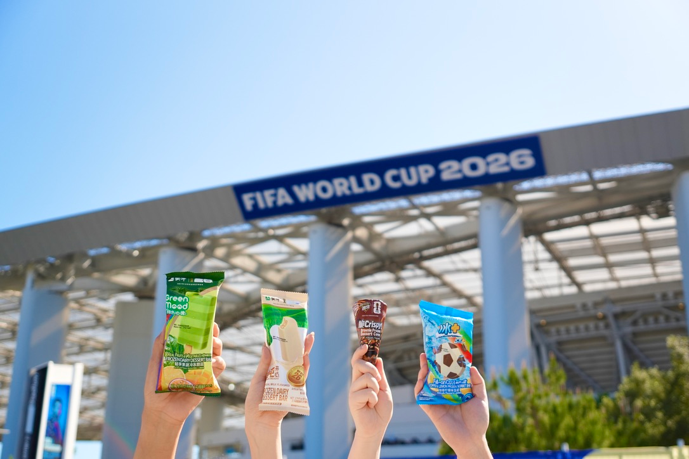
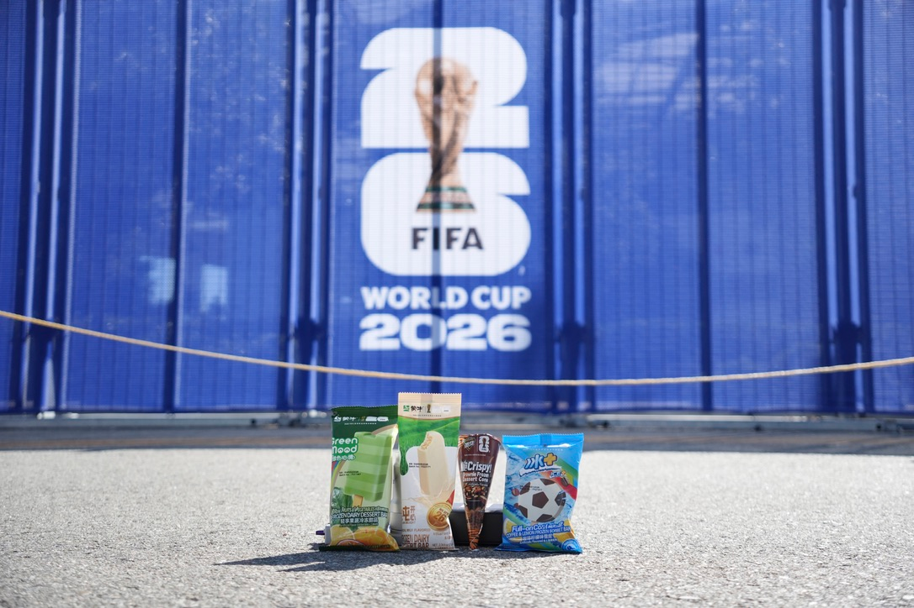
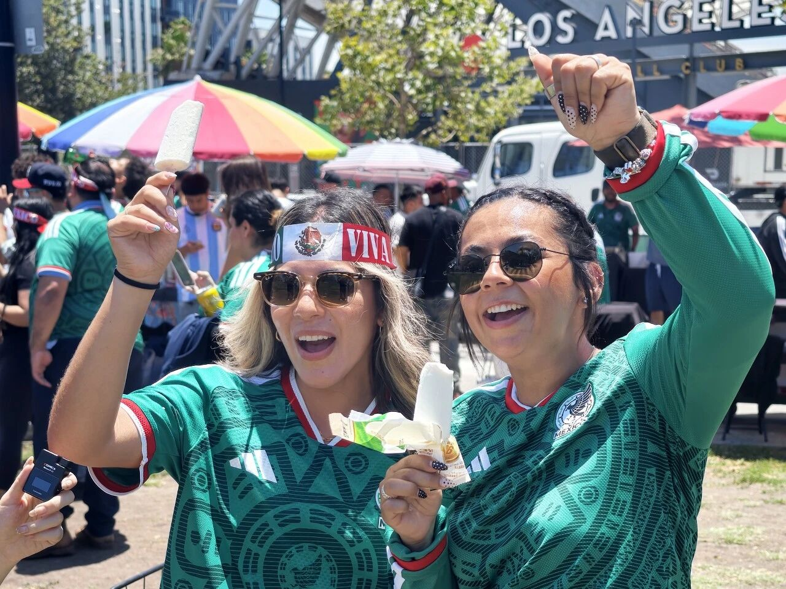
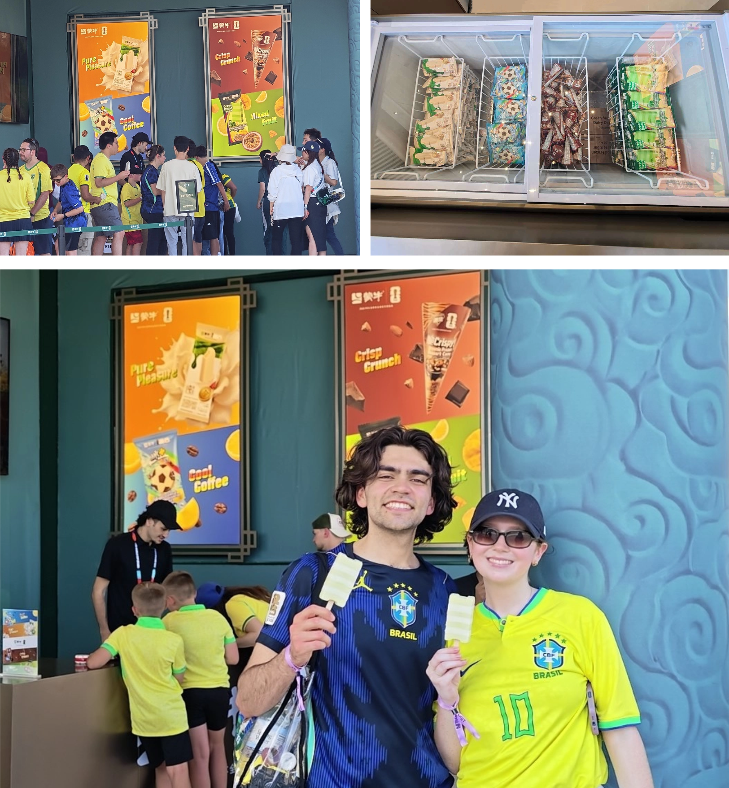
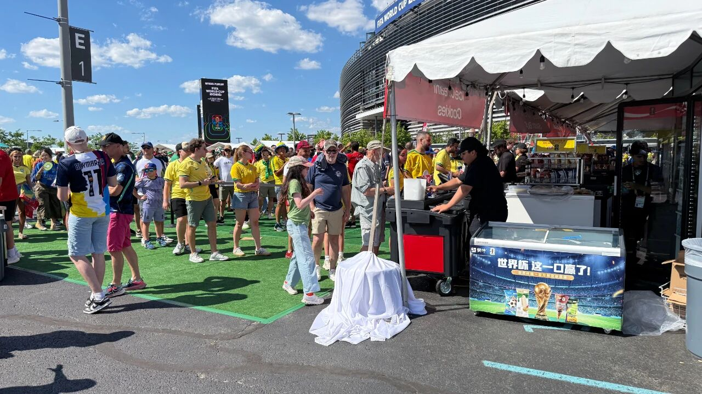

案例发生了什么



蒙牛把 FIFA 官方乳制品与冰淇淋供应商权益做成四款可购买产品，并将产品带入中国与美国商超、赛事场馆销售点及洛杉矶、纽约等美国 11 座核心城市。官方图片同时展示产品 KV、场馆背景板、海外球迷试吃和现场冰柜，证明这不是只有包装效果图的授权概念。
案例启示
案例启示
关键动作
- 以纯牛奶冰淇淋、随变布朗尼甜筒、冰+咖啡柠檬冰沙、绿色心情果蔬冰淇淋形成多口味商品款式矩阵。
- 用场馆销售点和海外球迷试吃，将“官方供应商”从身份语言变成消费体验。
- 同步进入国内与美国零售，避免赛事现场的短期露出与常规生意脱节。
传播与商业机制
传播路径
以“官方供应商 / 商品”为资源起点，进入官方赛事资产、品牌内容、产品/服务、零售或会员触点，让赛事权益转化为用户可接触、可讨论或可参与的内容。
商业承接
不把曝光直接等同销售，重点观察权益可见度、用户参与、产品/服务使用与商业转化的分层变化，并区分品牌自报、平台数据与可独立核验结果。
可复用的方法官方供应商权益的最低交付标准，是用户能找到、能买到、能在真实观赛现场使用产品；效果评价还要继续回到铺货、动销与复购。
适用条件、风险与证据
- 需要明确权益能被调用的范围，而不是只记录赞助级别。
- 至少准备内容与商业两条承接线，防止资源只在比赛画面里出现。
- 复盘时区分赛事可见度、用户参与和实际业务结果，不能相互替代。
核验记录可将已核动作作为内部判断基础；涉及投放规模、销售结果或合作细则时，仍应以品牌、平台或权利方的一手发布为准。 当前记录：已核（蒙牛官网）；素材状态：已归档 6 张官方商品与海外零售现场图。
品牌与权威来源物料
这里只展示可追溯到品牌、权利方、官方账号或明确注明原始出处的真实物料；研究图卡不计入案例图片。



资料与来源
官方资料、结果数据与下一步
已验证事实
- 蒙牛官网确认四款产品成为 2026 FIFA 世界杯官方冰淇淋：纯牛奶冰淇淋、随变布朗尼甜筒、冰+咖啡柠檬冰沙、绿色心情果蔬冰淇淋。
- 官方页面写明产品在中国和美国商超上市，并进入赛事场馆销售点及洛杉矶、纽约等美国 11 座核心城市。
- 本页已归档产品 KV、场馆背景板、墨西哥球迷试吃、现场冰柜与销售点共 6 张官网原图。
可追溯的结果
- 蒙牛赛后复盘披露京东、美团、天猫和便利店的整盘增长，但未分拆四款世界杯冰淇淋的铺货门店、销量、售罄率、复购或美国市场收入。
原始来源
来源链接优先指向品牌、权利方或持权媒体官方页面；品牌自述数据按原始定义记录，不视作独立审计结果。